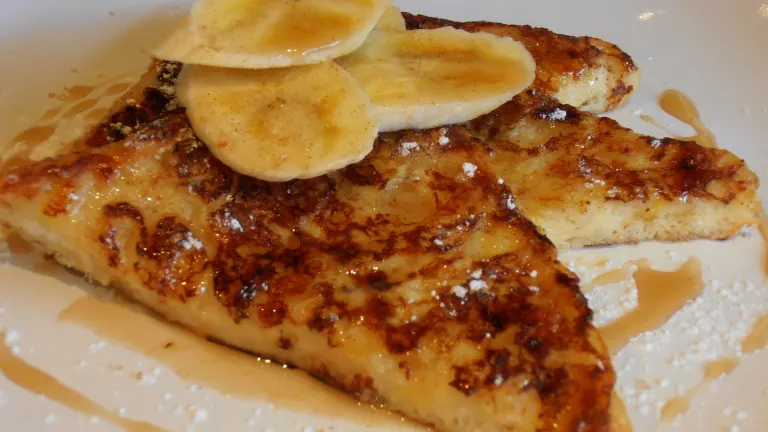

Banana Toast

Description
Delicious sourdough bread topped with honey & thin banana slices
Ingredients
- 2 slices of sourdough bread
- a pot of your favorite honey
- butter (optional for extra creamy toast)
- 1 banana
Steps
- Toast the bread till golden brown
- While bread is toasting, thinly slice the banana
- Spread toast with butter (optional)
- Spread the honey
- line the toast with thin slices of banana
- You can either leave the banana slices in tact or blend them in with the noney.